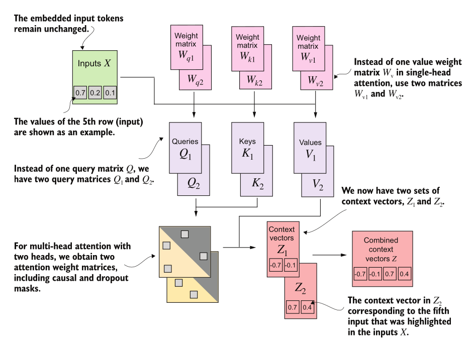
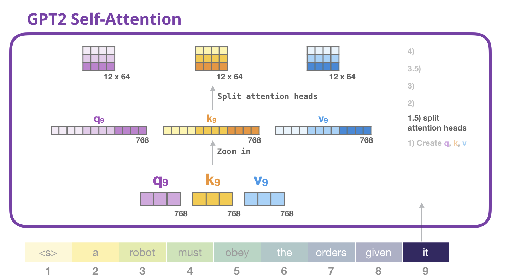
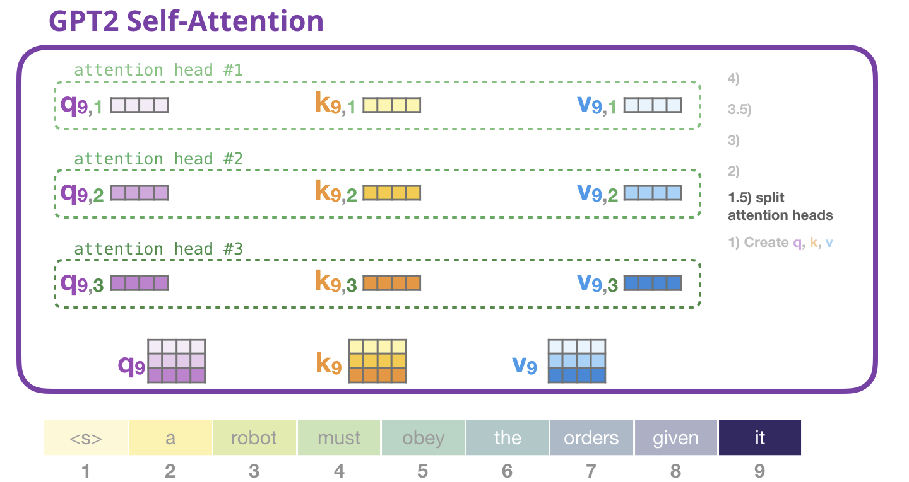
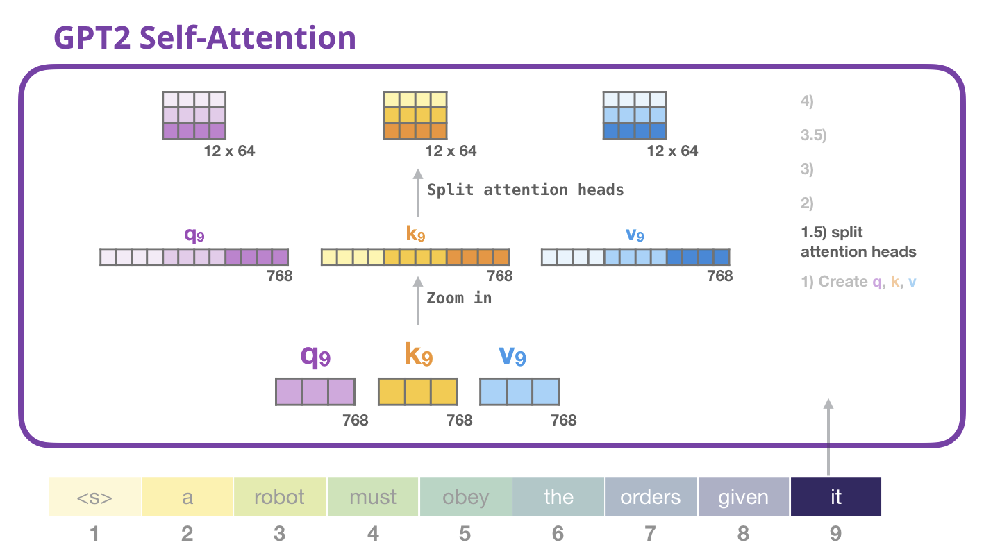
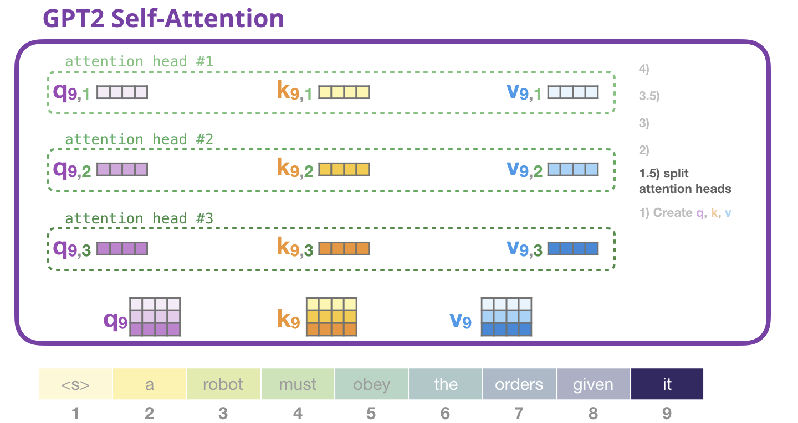
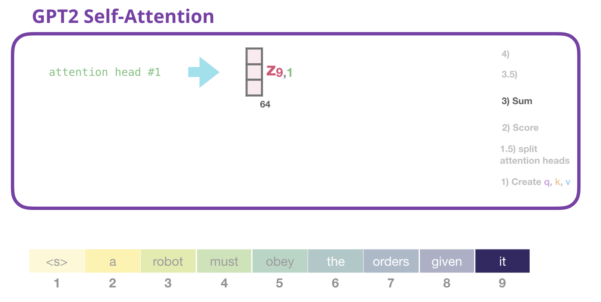
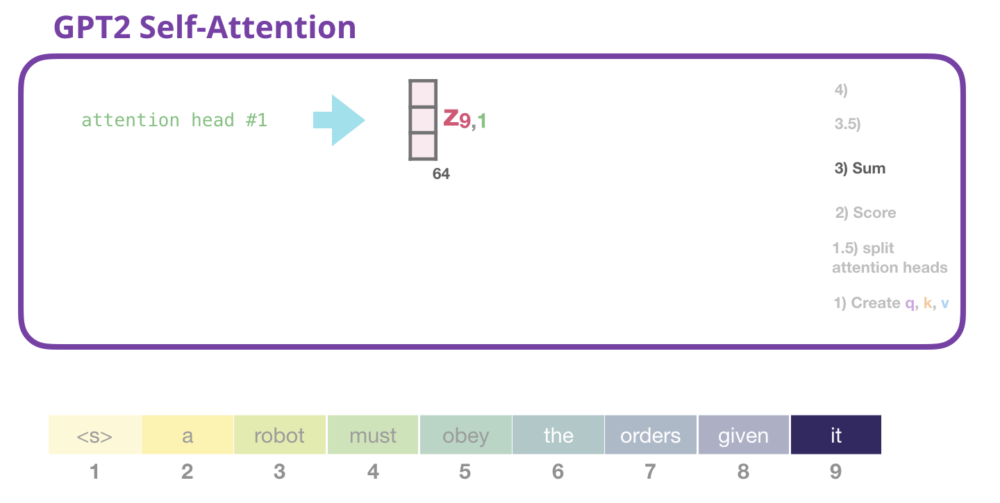

Topics Covered
- Transformer Architecture Review
- Self-Attention Mechanism Recap
- Causal Masking in Decoder-Only Models
- Multi-Head Attention
- GPT-2 Architecture
- Layer Normalization
- Self-Attention in GPT-2
- Feed-Forward Network (FFN)
- Residual Connections
- Implementing GPT-2 from Scratch
Models of the Week
- SOTA Open Source model
- 199B parameters, Vocabulary Size - 128K, Context Length - 256K
- 45 Transformer layers
- Attention
- num_attention_heads: 64
- head_dim: 128
- Coding and Agentic use
arcee-ai/Trinity-Large-Preview
- ~398B parameters, Vocabulary Size - 200192, Context Length - 8192, 512K
- 60 Transformer layers
- Attention
- num_attention_heads: 48
- head_dim: 128
Recap : Self-Attention Mechanism
- The token embeddings alone are not sufficient.
- We want dynamic, context-dependent representations of each token.
- Self-attention allows each token to attend to all other tokens in the sequence to gather relevant context.
Recap : Self-Attention Mechanism
We project the token embedding to three learned projection spaces:
PROJECTION === "Matrix Multiplication"
- Query (Q): $q_i = x_i W_q$
- Key (K): $k_i = x_i W_k$
- Value (V): $v_i = x_i W_v$

Introducing Q, K, V vectors
We transform each input token into three different vectors:
- Token embedding: x_i
- Query (Q): What am I looking for?
- Key (K): What do I have to offer?
- Value (V): What information do I carry?

Scaled Dot-Product Attention
$ \mathbf{Attention}(Q, K, V) = \mathbf{softmax}\left(\frac{QK^{\top}}{\sqrt{d_k}}\right)V $
- $d_k \text{ is the dimensionality of the key vectors (used for scaling).}$
- without $\sqrt{d_k}$, dot products grow with dimension → softmax saturates → tiny gradients.

Causal Attention (Masking) in Decoder-Only Models

- In decoder-only models, we predict next token based on previous tokens
- Note : During training, we predict all tokens in parallel
- To prevent information leakage from future tokens, we apply a causal mask to the attention scores
- At all time steps, each token can only attend to earlier tokens and itself
Multi-Head Attention
Stacking multiple attention heads
- Perform multiple self-attention calculations in parallel
- Independent set of learned weight matrices (Wq, Wk, Wv) and output vector for each head.
- Concatenate all to produce one context vector for each token.
- Multiple heads -> attend to input sentence simultaneously -> different relationships and patterns in the data.
$ MultiHead(Q,K,V) = Concat(head_1,...,head_h)W_O $
where $ head_i = Attention(QW_{q_i}, KW_{k_i}, VW_{v_i}) $
Generative Pre-trained Transformer (GPT)
- Decoder only Transformer architecture
- Pre-trained on large corpus of text data (40GB of internet text) using self-supervised next-token prediction.
- Demonstrated that general purpose models for textual understanding are incredibly effective without using any task-specific architectures or modifications

Language Modeling Objective
Predict the next token in a sequence given all previous tokens
P(x) = ∏ P(x_i | x_1, ..., x_{i-1})

Auto-regressive Text Generation
- Given a prompt, GPT-2 generates text one token at a time
- At each step, the model predicts the next token based on all previous tokens
- The predicted token is appended to the input sequence for the next prediction

GPT-2 Architecture
- GPT model stacks multiple transformer decoder blocks
- Each block has:
- Masked Multi-Head Self-Attention layer
- Feed-Forward Neural Network (FFN)
- Layer Normalization and Residual Connections
- Final output layer

Ref : Radford et al., 2019 "Language Models are Unsupervised Multitask Learners"
Detailed GPT-2 Architecture
GPT_CONFIG_124M = {
"vocab_size": 50257, # 50000 BPE merges + 256 byte tokens + 1 special token
"context_length": 1024, # max length of input sequences
"emb_dim": 768,
"n_heads": 12,
"n_layers": 12,
"drop_rate": 0.1,
"qkv_bias": False
}
Inputs to the GPT-2 Model
- Input Text -> Tokenization -> Token IDs
- Input Encodings:
- Token Embeddings: Represent the meaning of each token
- Positional Encodings: Represent the position of each token in the sequence
- Combined to form the input to the first transformer block

Inputs to the GPT-2 Model
- Transformers have no inherent notion of sequence order, Without positional info, 'dog bites man' = 'man bites dog' to the model
- GPT-2 uses LEARNED positional embeddings (vs sinusoidal in original Transformer)
- Both embeddings are simply added element-wise (not concatenated)

Layer Normalization
- Gradient explosion/vanishing issues in deep networks
- Normalizes (centers) inputs across features for each token to have zero mean and unit variance
- Stabilizes training and improves convergence
- In GPT-2, applied before self-attention and feed-forward layers (Pre-LN)

Layer Normalization
- Normalization
$ \hat x = \frac{x - \mu}{\sigma + \epsilon} $
- LayerNorm formula:
$ \text{LayerNorm}(x) = \frac{x - \mu}{\sigma + \epsilon} \cdot \gamma + \beta $
Where:
- x: input vector for a token
- μ: mean of the elements in x
- σ: standard deviation of the elements in x
- ε: small constant for numerical stability
- γ, β: learnable parameters for scaling and shifting
Self-Attention in GPT-2
- Multi-Head Self-Attention mechanism
- Attention heads : 12
- Head dimension : 64
- Context length : 1024 tokens
- Context Vector Size per token : 768 (12 heads * 64 dim)
Self-Attention in GPT-2
Each Transformer Block contains
- A Multi-Head Self-Attention layer
- Each head computes attention using Q, K, V
- Causal mask applied to prevent attending to future tokens and dropout for regularization
 



 



Feed-Forward Network (FFN)
- A Feed-Forward Network (FFN) is applied independently to each token's representation after the self-attention layer.
- Affine transformation followed by a non-linear activation function.

Feed-Forward Network (FFN)
- A Feed-Forward Network (FFN) is applied independently to each token's representation after the self-attention layer.
- Affine transformation followed by a non-linear activation function.
A Linear Layer is defined as: $ \text{Linear}(x) = xW^T + b $

Feed-Forward Network (FFN) in GPT-2
- Each transformer block contains a Feed-Forward Network (FFN)
- FFN has two linear layers with GELU activation in between
$ \text{FFN}(x) = \text{Linear}_2(\text{GELU}(\text{Linear}_1(x))) $

GELU Activation Function
- Gaussian Error Linear Unit (GELU) is used in GPT-2's FFN
- Smooth approximation of ReLU, allows small negative values to pass through
$\mathbf{GELU(x) = 0.5 \cdot x \cdot (1 + \tanh[\sqrt{2/\pi}(x + 0.044715 \cdot x^3)])}$

FFN in GPT-2
- Hidden layer size is 4 times the input/output size (3072 for GPT-2 small)
- Applies non-linear transformation to each token's representation independently

Why 4x?
- Empirically found to work well
FFN layers contain most of the model's parameters!
- For GPT-2 small: FFN has 768 -> 3072 -> 768, that's 768 * 3072 * 2 ≈ 4.7M params per block
- 12 blocks × 4.7 M ≈ 56M params just in FFNs (almost half the model)
Residual Connections
- Help mitigate vanishing gradient problems in deep networks
- Add the input of a layer to its output before passing to the next layer
- Gradients get progressively smaller as they backpropagate through layers
- Preserve information from earlier layers, helping training stability

Connecting it all : Transformer Block in GPT-2
We have implemented the key components of a transformer block used in GPT-2:
- ✓ Layer Normalization
- ✓ Multi-Head Self-Attention with Causal Masking
- ✓ Residual Connection
- ✓ Feed-Forward Network (FFN)
12 such blocks are stacked in GPT-2 small

Transformer Block in GPT-2

def forward(self, x):
shortcut = x
x = self.norm1(x)
x = self.att(x)
x = self.dropout(x)
x = x + shortcut
shortcut = x
x = self.norm2(x)
x = self.ff(x)
x = self.dropout(x)
x = x + shortcut
return x
GPT-2 Model Implementation
- We have all the components to implement GPT-2 from scratch
- Token Embeddings + Positional Encodings
- Stack of Transformer Blocks
- Final Layer Normalization and Output Layer
GPT-2 Model Implementation
Model Initialization
## GPT-2 Model Initialization pseudo-code
tok_emb = nn.Embedding(vocab_size, emb_dim)
pos_emb = nn.Embedding(context_length, emb_dim)
drop_emb = nn.Dropout(drop_rate)
trf_blocks = [TransformerBlock(cfg) for _ in range(n_layers)] #
final_norm = LayerNorm(emb_dim)
out_head = nn.Linear(emb_dim, vocab_size, bias=False)
Forward Pass
x = tok_embeds + pos_embeds
x = self.drop_emb(x)
x = self.trf_blocks(x)
x = self.final_norm(x)
logits = self.out_head(x)
GPT-2 Parameter Count
- GPT-2 small has ~124M parameters
- Major contributors:
- Token Embeddings: ~38M
- Transformer Blocks: ~85M
- Self-Attention layers: ~23M
- Feed-Forward Networks: ~56M
- Output Layer: ~38M
- Most parameters are in embeddings and FFN layers
Next Steps
- Implement training loop with cross-entropy loss
- Integrate tokenizer for text input/output
- Load pretrained weights from HuggingFace for GPT-2
- Experiment with text generation
References
- Decoder-Only Transformers: The Workhorse of Generative LLMs
- The Illustrated GPT-2 (Visualizing Transformer Language Models)
- GPT-2 Paper
- Attention Is All You Need Paper
- Build LLMs from Scratch, Sebastian Raschka, Manning Publications, 2025